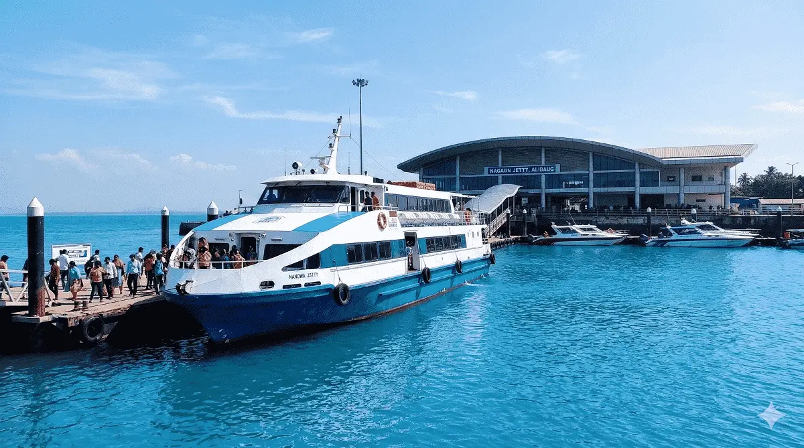
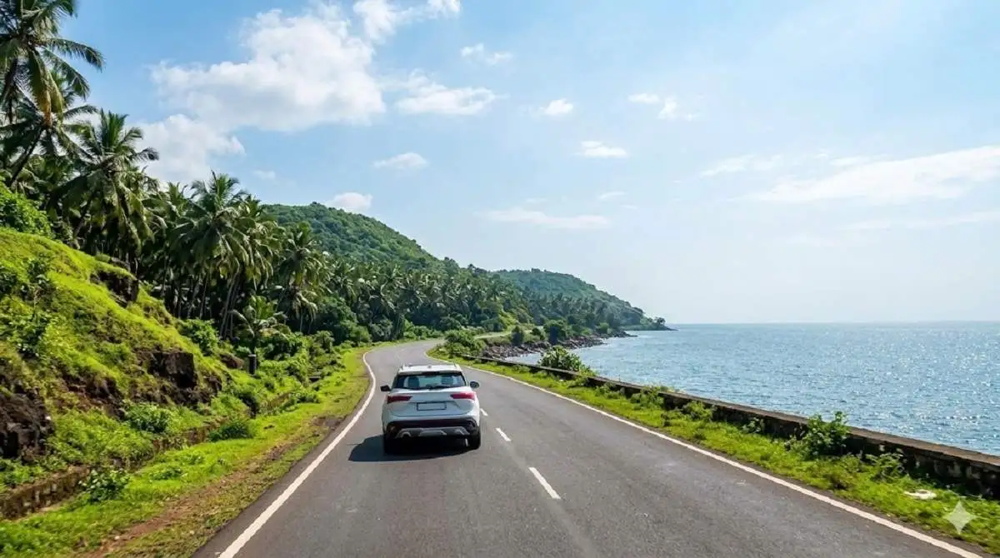

Mumbai to Alibaug Ferry
The ferry from Mumbai to Mandwa Jetty is one of the fastest
and most scenic ways to reach Alibaug.
Ferries operate from the Gateway of India and Bhaucha Dhakka
ferry terminals in Mumbai.
The ferry journey usually takes around
45 to 60 minutes.
After reaching Mandwa, buses and taxis are available to travel
to Alibaug town or nearby beaches.

Road Travel from Mumbai
Driving from Mumbai to Alibaug is another popular option.
The route passes through Panvel and Pen before reaching
the coastal town.
The road journey typically takes around
2.5 to 3 hours depending on traffic.
This option is ideal for families and travelers who prefer
flexible travel schedules.

Bus and Cab Options
Public buses and private taxis also operate between Mumbai
and Alibaug.
MSRTC buses connect major locations such as Panvel,
Alibaug town and nearby villages.
Many travelers combine ferry travel with taxis from
Mandwa Jetty to reach their hotel or resort.